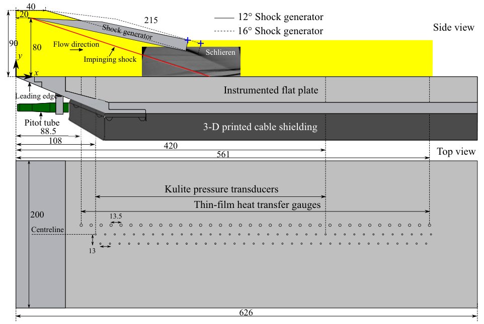
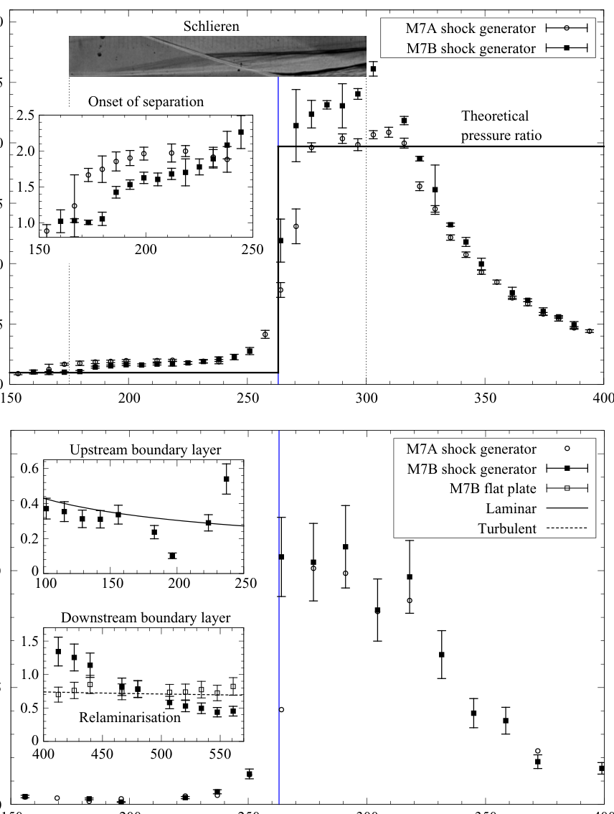
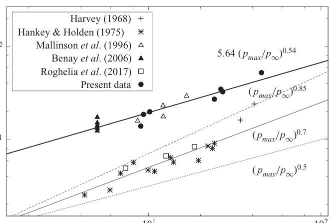
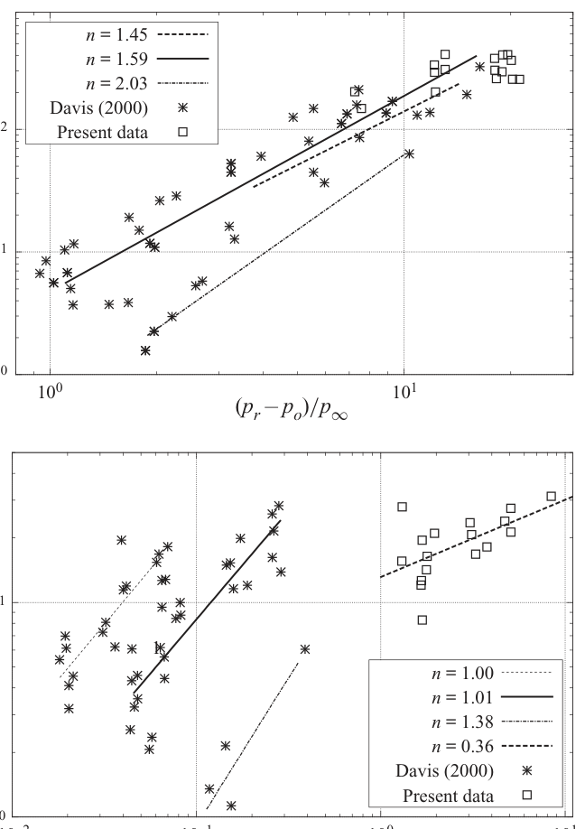

01中文摘要
在T4 Stalker管中开展马赫7平板入射激波实验，飞行焓为2.44 MJ/kg（M7.0）和2.88 MJ/kg（M7.7），单位雷诺数1.43×10⁶–5.01×10⁶ m⁻¹；12°或16°激波发生器产生斜激波入射平板边界层。同步测量壁面静压、热流和纹影。无激波时边界层保持层流；激波入射后，分离起始处壁压升高、热流下降，下游压力和热流升高，热流水平表明激波入射诱发边界层转捩。分离数据与加热壁面实验一致，并与压力比和壁温参数相关的标度关系相符。
原始摘要（英文/原文）
Interactions between shock waves and boundary layers produce flow separations and augmented pressure/thermal loads in hypersonic flight. This study provides details of Mach 7 impinging-shock-flat-plate experiments conducted in the T4 Stalker Tube. Measurements were taken at flow conditions of Mach 7.0 (2.44 MJ kg ⁻¹) and Mach 7.7 (2.88 MJ kg ⁻¹) flight enthalpies with a range of freestream unit Reynolds numbers from 1.43 × 10⁶ m ⁻¹ to 5.01 × 10⁶ m ⁻¹. A shock generator at 12^{° } or 16^{° } to the freestream created an oblique shock which impinged on a boundary layer over a flat plate to induce flow separation. The flow field was examined using simultaneous measurements of wall static pressure, heat transfer and schlieren visualisation. Measured heat transfer along the flat plate without the shock impingement indicated that the boundary layer remained laminar for all flow conditions. The shock impingement flow field was successfully established within the facility test duration. The onset of separation was observed by a rise in wall pressure and a decrease in heat transfer at the location corresponding to the stem of the separation shock. Downstream of this initial rise, an increased pressure and higher heating loads were observed. The heat-transfer levels also indicated an immediate boundary layer transition due to the shock impingement. The separation data of the present work showed good agreement with our previous work on shock impingement on heated walls (Chang et al., J. Fluid Mech., vol. 908, 2021, pp. 1–13). A comparison with the previous scaling indicated that the separation also relates to the pressure ratio and the wall temperature parameter.
02阅读说明
实验研究（激波风洞）。JFM 2022, vol. 951, A19，27页；bundle 共1545行已全部读完；图件清单16项（含Table 1），正文图18幅；另用PDF第4、7、14、20、22页核对表1、式(2.1)(2.2)(4.2)(5.1)(5.2)(5.3)及图16/18。信息完整度较高：三工况、两激波角、测点布置、不确定度与建立时间齐全；但无边界层剖面测量、无展向热流分布、16°仅一组工况，且表1与图6/7图注的Hs/Re数值不完全一致。 文章类型：期刊
03一句话核心与三句话摘要
T4风洞M7层流平板受12°/16°激波冲击：分离压比1.48–1.55，峰值热流3.29 MW/m²，激波后立即转捩。
- 问题与缺口：高超声速飞行器内流激波干扰会触发分离、不起动与极端热载荷，但飞行代表焓/密度的入射激波-平板实验数据很少，热壁模型又缺乏表面传感器。 AI概括
- 方法与工况：在T4 Stalker管M7喷管下，用626×200 mm平板、12°/16°激波发生器、Kulite与薄膜热流计同步测压/测热并拍纹影，来流Re∞=1.43–4.93×10^6 m^-1、Hs=2.43–2.88 MJ/kg。 原文明确
- 主要发现：上游边界层保持层流，分离起始压比1.48–1.55，12°/16°最大热流约1.95–3.29 MW/m²，激波后立即转捩并随后再层流化，最大热流拟合为5.64(pmax/p∞)^0.54。 原文明确
04核心内容清单
| 要点 | 类型 | 重要性 | 原文依据 | 属性 |
|---|---|---|---|---|
| 在T4 Stalker管获得M7飞行焓、飞行代表Re的入射激波-平板实验数据，同时测壁压、热流和纹影，补足前期热壁数据缺表面传感器的问题。 | 实验贡献 | A | p1–3，p5–7 | 原文明确 |
| 无激波时上游边界层在入射点前保持层流；M7B转捩Re≈2.16×10^6，M7.7B湍流斑Re≈1.34×10^6，M7A全层流。 | 基准流动 | A | p8–9，图6–7 | 原文明确 |
| 分离流场建立需3–10个归一化流动时间，分离起始处最慢（≈10），全流场稳态约700 μs；比压缩拐角略长。 | 建立时间 | A | p12–15，图12 | 原文明确 |
| 分离起始由壁压上升与热流下降共同标识；起始压比p_o/p_w=1.55（M7B 12°与16°）、1.48（M7.7B），与自由干扰理论接近。 | 分离判据 | A | p15–18，图13–15，式(5.2) | 原文明确 |
| 12° M7B：压力平台21.4–25.5 p_w，峰值St=10.8×10^-3（q=2.07 MW/m²），激波后立即转捩，x≈530 mm再层流化。 | 定量结果 | A | p15，图13 | 原文明确 |
| M7A（低Re）分离起始更上游（x=160 mm）、分离泡更大，峰值St=10.1×10^-3、q仅0.57 MW/m²。 | 工况对比 | A | p15，图13 | 原文明确 |
| M7.7B（12°）压力比更低（18–22），峰值St=11.7×10^-3、q=1.95 MW/m²。 | 工况对比 | A | p16–17，图14 | 原文明确 |
| 16° M7B：起始x=167 mm，p_o/p_w仍为1.55；峰值St=16.8×10^-3、q=3.29 MW/m²，约为上游的53倍；入射点到膨胀扇距离更短。 | 激波强度效应 | A | p17–18，图15 | 原文明确 |
| 激波冲击使层流边界层立即转捩；强膨胀扇又使激波后边界层再层流化，16°亦如此。 | 转捩/再层流化 | A | p15–19，图13–15 | 原文明确 |
| 最大热流与压力比的新拟合为q_w,max/q_w,0≈5.64(p_max/p∞)^0.54，明显高于全湍流0.85次关联；作者归因于层流-湍流转捩与Görtler涡。 | 经验关联 | A | p19–20，图16，式(4.3) | 原文明确 |
| 分离长度标度L_sep/δ_i*≈K√Re_i/M∞³·(p_r−p_o)/p∞，K≈0.95，与热壁数据一致，但不同于Katzer（K=4.4）与Bleilebens壁温关联。 | 分离标度 | A | p20–21，图17，式(5.1) | 原文明确 |
| 按Davis–Sturtevant标度，压力比斜率1.45/1.59/2.03、Λ1斜率0.36；Tw/T∞单独不足以描述壁温效应。 | 分离标度 | A | p21–23，图18，式(5.3) | 原文明确 |
05引言：研究问题与领域缺口
【原文明确】激波干扰普遍存在于高超声速飞行器；不受控分离可导致发动机不起动与能量损失，受控激波干扰可用于点火/稳焰，但局部热载荷可致结构失效；分离尺度与热载荷强烈依赖边界层状态。层流SBLI实验（Hakkinen等1959）与Katzer数值研究（M1–3.4）表明层流分离长度线性依赖激波强度，Chapman等自由干扰理论可预测起始分离。湍流SBLI仍有低频非定常与壁温标度难题。高超声速脉冲风洞数据多为低静温“冷”流（如M11.2、T∞=68 K的LENS数据），飞行代表焓/密度的入射激波-平板数据很少；Schülein的M5 Ludwieg管数据虽广泛用于RANS/DNS验证，但静温低于飞行；作者前期热壁实验（Chang等2020、2021）因壁温高而缺少表面传感器。【原文明确】本文用T4 Stalker管、无加热但带表面传感器的平板，在M7.0/7.7飞行焓、Re∞=1.43–4.93×10^6 m^-1下测量12°/16°激波冲击层流边界层的壁压、热流与纹影，补足热壁数据并检验分离/最大热流关联。
06流动条件与几何构型
| 项目 | 数值/描述 | 依据 | 备注 |
|---|---|---|---|
| 工况M7A（12°激波发生器） | M∞=7.00；Re∞=1.43×10^6 m^-1；ps=4.55 MPa；Hs=2.45 MJ/kg；Ts=2330 K；p∞=758 Pa；T∞=251 K；u∞=2234 m/s；q∞=25.9 kPa；稳态约至t≈5 ms | 表1，p4；p4正文 | 标称飞行焓当量M7A；12°激波发生器 |
| 工况M7B（12°激波发生器） | M∞=7.00；Re∞=4.93×10^6 m^-1；ps=15.50 MPa；Hs=2.43 MJ/kg；Ts=2334 K；p∞=2550 Pa；T∞=252 K；u∞=2226 m/s；q∞=70.3 kPa；稳态约至t≈3.5 ms | 表1，p4；p4正文 | 热流平均窗口t≈3.1–3.8 ms（12°） |
| 工况M7.7B（12°激波发生器） | M∞=6.85；Re∞=3.15×10^6 m^-1；ps=12.60 MPa；Hs=2.88 MJ/kg；Ts=2653 K；p∞=2138 Pa；T∞=305 K；u∞=2398 m/s；q∞=60.8 kPa；稳态约至t≈3.8 ms | 表1，p4；p4正文 | 文中称Mach 7.7飞行焓，实测M∞=6.85 |
| 工况M7B（16°激波发生器） | 来流同M7B；激波发生器16°，安装于x=40 mm、y=90 mm；理论入射点x≈255.1 mm；p2/p∞=8.35 | p5–6，p18，图3、图15 | 仅一组16°工况 |
| 平板模型 | 轴向长626 mm，展向宽200 mm，前缘尖锐可更换（r<0.1 mm） | p5，图3 | |
| 激波发生器 | 长215 mm、宽172 mm；12°/16°；无粘激波强度p2/p∞=5.53/8.35；12°理论入射x≈260.4 mm，16° x≈255.1 mm | p5，图3 | |
| 壁面热条件 | 无加热壁，Tw=298 K（St归一化用） | p7，式(2.2) | |
| 压力测点 | 两排Kulite XTEL-190(M)，13 mm间距、6.5 mm错位；x=108–420 mm；凹装孔径1.5 mm | p5 | |
| 热流测点 | 单排薄膜HTG，13.5 mm间距，x=88.5–561 mm；20 nm镍膜/石英 | p5–6 | |
| 二维性 | 展弦比≈0.8；展向62δo（δo,max=3.2 mm）；三维RANS验证中心线二维 | p5–6 | 未加侧壁以避免分离长度增加 |
| 来流不确定度 | M∞ ±2.0%；Re∞ ±7.6%；ps ±3.6%；Hs ±3.3%；Ts ±2.5%；p∞ ±13%；T∞ ±5.1%；u∞ ±1.5%；q∞ ±9.5% | 表1，p4 | 按表1列序；均方根法（Mee 1993） |
| 热流/压力不确定度 | St ±16%；Kulite 2% | p7，p8 | |
| 纹影 | Phantom v611；平板视场80,000 fps、激波发生器视场16,000 fps；曝光0.8 μs | p7 | |
| 稳态试验时间 | 全流场约700 μs；M7B 12°热流平均窗口t≈3.1–3.8 ms | p12–13，p23 |
07核心现象与关键参数
| 参数 | 定义 | 数值 | 关系/说明 | 依据 |
|---|---|---|---|---|
| 分离起始位置（12°） | 壁压开始上升/热流开始下降的位置 | M7A：x=160 mm；M7B：x=180 mm（平台x=192.5 mm）；M7.7B：x=166.5 mm | p15–16，图13–14 | |
| 分离起始压比p_o/p_w | 起始分离平台压力与上游壁压之比 | M7B 12°：1.55；M7.7B：1.48；16° M7B：1.55；M7A：文中未给起始值（平台1.90） | p15–18，图13–15 | |
| 实测平台压力 | 分离泡内平台压力（以p_w归一化） | M7A：1.90；M7B：1.56；M7.7B：1.69（x=199 mm） | 理论值1.86/1.55/1.66 | p21，式(5.2)讨论 |
| 激波后压力峰值 | 入射激波后平台/附加压缩压力 | M7B 12°：21.4 p_w（x=270.5 mm）→25.5 p_w（x=303 mm）；M7.7B：18→22；16°：文中未给具体数值 | p15–18，图13–15 | |
| 最大Stanton数 | 壁面热流归一化 | M7B 12°：10.8×10^-3；M7A：10.1×10^-3；M7.7B：11.7×10^-3；M7B 16°：16.8×10^-3 | p15–18，图13–15 | |
| 最大热流q_max | Tw=298 K下由St换算的平均热流 | M7B 12°：2.07 MW/m²（x=291 mm）；M7A：0.57 MW/m²（x=277.5 mm）；M7.7B：1.95 MW/m²；16°：3.29 MW/m²（x=280 mm） | p15–18 | |
| 16°平均热流 | x=270.5–300.5 mm平均 | 3.17 MW/m² | 峰值约为上游x=156 mm的53倍 | p18 |
| 分离长度L_sep（12° M7B） | 分离起始点到入射点的流向距离 | 约80 mm | 文中用于建立时间换算；按x=180 mm与ximp=260.4 mm则为80.4 mm | p14，§4.1；§5 |
| 归一化建立时间t_est | 从流动到达至稳态的时间除以t_flow=x/u∞ | 全场3–10；层流段3–4；分离起始≈10；入射点5–6；下游4–7 | t_est=(1/0.3)t_flow（Gupta 1972） | p13–14，图12，式(4.1)(4.2) |
| 稳态持续时间 | 全流场近似稳态时间 | ≈700 μs | p23，结论 | |
| 转捩雷诺数 | 以x位置与来流单位Re计算 | M7B：湍流斑Re≈1.50×10^6（x=304.5 mm），完全湍流Re≈2.16×10^6（x=439.5 mm）；M7.7B：湍流斑Re≈1.34×10^6（x=426 mm），x=561 mm Re≈1.77×10^6 | p8–9，图6–7 | |
| 最大热流关联指数n | q_w,max/q_w,0=(p_max/p∞)^n中的指数 | 本文拟合n=0.54、系数5.64；文献全湍流n=0.85/0.80，层流n=0.70 | p19，式(4.3)，图16 | |
| 分离标度常数K | L_sep/δ_i*≈K√Re_i/M∞³·(p_r−p_o)/p∞ | K≈0.95 | C=(μw/μ∞)/(Tw/T∞) | p20，式(5.1)，图17 |
| C（壁温/粘性修正） | 式(5.1)中的C | C=(μw/μ∞)/(Tw/T∞) | p20，式(5.1c) | |
| 压力比(p_r−p_o)/p∞与Re_i | 再附与起始压力差、相互作用区雷诺数 | 本文p_r/p∞=22.1（M7B）与38.3（M7.7B）；Re_i=8.1×10^5–13×10^5 | p21 | |
| Davis–Sturtevant标度斜率 | log–log坐标线性拟合斜率n | 压力比：1.45/1.59/2.03；Λ1：1.00/1.01/1.38；本文综合0.36 | p22–23，图18，式(5.3) | |
| Λ1 | Davis–Sturtevant壁温参数 | Λ1=(μw/μ*)(T*/Te)(Tw/Te)^1/2 | p22，式(5.3b) | |
| 激波强度p2/p∞ | 无粘斜激波压比 | 12°：5.53；16°：8.35 | p5 | |
| 展向尺度 | 平板展向宽度与分离处边界层厚度之比 | 62δo；δo,max=3.2 mm | p6 |
08方法与数据
【原文明确】T4反射激波风洞：90.05 kg活塞在27 m压缩管内压缩氩/氮驱动气，破膜后强激波经13 m激波管在喷管供给区反射，加热/压缩试验气体（空气），再经轴对称M7喷管膨胀；来流用ESTCj计算，Pitot探针（距喷管出口中心43 mm，位于出口上游30/35/40 mm）校验，实验压力误差棒取稳态段两倍标准差。平板626 mm×200 mm，前缘尖锐可更换（r<0.1 mm）；两排13 mm间距Kulite XTEL-190(M)压阻传感器（中心线与13 mm偏置，x=108–420 mm，凹装孔径1.5 mm）；一排13.5 mm间距薄膜热流计（20 nm镍膜溅射于石英，x=88.5–561 mm）；14块NI PXI-6133、1 MHz采样，由喷管供给压力触发。激波发生器215 mm×172 mm，12°/16°，无粘激波强度p2/p∞=5.53/8.35，M7理论入射点x≈260.4/255.1 mm。热流按Schultz & Jones式(2.1)由电压反演，St按式(2.2)以Hs−hw（Tw=298 K）归一化，St不确定度±16%，Kulite不确定度2%。纹影Phantom v611：平板视场80,000 fps、激波发生器视场16,000 fps，曝光0.8 μs。平均窗口由热流信号确定：M7B 12°取t≈3.1–3.8 ms。二维性用展弦比≈0.8、展向62δo（δo,max=3.2 mm）与三维RANS中心线校核；边界层参考用Cebeci程序。建立时间按式(4.1) t_flow=x/u∞、式(4.2) t_est=(1/0.3)t_flow归一化。
| 项目 | 内容 | 依据 | 备注 |
|---|---|---|---|
| 试验设施 | 昆士兰大学T4 Stalker管（反射激波风洞）：90.05 kg活塞、27 m压缩管、13 m激波管、轴对称M7喷管 | p3 | |
| 来流计算与校验 | ESTCj计算平衡喷管供给条件；Pitot探针（距喷管出口中心43 mm）时程与喷管数值模拟对比 | p3–5，图2 | |
| 试验模型 | 626 mm×200 mm平板，尖锐前缘r<0.1 mm；215 mm×172 mm激波发生器，12°/16° | p5，图3 | |
| 压力测量 | Kulite XTEL-190(M)压阻传感器，两排13 mm间距/6.5 mm错位，x=108–420 mm；凹装1.5 mm孔；大气/抽真空两点校准 | p5–6 | |
| 热流测量 | 薄膜HTG：20 nm镍膜溅射于石英，13.5 mm间距，x=88.5–561 mm；按Schultz & Jones式(2.1)由电压变化反演 | p5–7，式(2.1) | |
| 热流归一化 | St=q/[ρ∞u∞(Hs−hw)]，hw取Tw=298 K | p7，式(2.2) | |
| 数据采集 | 14块NI PXI-6133，1 MHz；喷管供给压力触发；Kulite逐点灵敏度/偏置校准 | p6 | |
| 纹影 | Phantom v611高速相机；平板80,000 fps、激波发生器16,000 fps；曝光0.8 μs；TTL触发 | p7 | |
| 平均窗口 | 以热流信号稳态段确定；M7B 12°取t≈3.1–3.8 ms；压力取稳态段均值，误差棒为标准差 | p8，p12–13 | |
| 边界层参考 | Cebeci边界层程序计算层流/湍流Stanton数分布（Wise & Smart 2014） | p8，图6 | |
| 二维性校核 | 展弦比≈0.8（对比Degrez判据>1为二维）；展向62δo；三维RANS CFD确认中心线二维 | p5–6 | |
| 建立时间归一化 | t_flow=x/u∞，x=626 mm；t_est由热流信号起始到稳态定义；与Gupta层流关联对比 | p13–14，式(4.1)(4.2) | |
| 不确定度 | 各来流参数按表1；St ±16%；压力误差棒为稳态段标准差；来流参数用均方根法（Mee 1993） | p4，p7–8 | |
| 最大热流关联 | q_w,max/q_w,0=(p_max/p∞)^n，拟合本文与文献数据 | p19，式(4.3) | |
| 分离长度标度 | 式(5.1) K≈0.95；用式(5.2)自由干扰理论估算p_o；用式(5.3) Davis–Sturtevant三阶边界层标度对比 | p20–22 | |
| 转捩/再层流化判定 | 以热流时程中湍流斑尖峰、Stanton数抬升及纹影混沌结构判定；下游与平板基准对比判定再层流化 | p8–9，p15，p19 |
09核心推导与公式
原文未给出从守恒律出发的完整解析推导；以下仅列出材料中可核对的定义或建模链，不补写教科书推导。
本文为激波风洞实验研究，未从控制方程推导；定量分析引用薄膜热流反演式、Stanton数定义、自由干扰理论、最大热流经验幂律与Davis–Sturtevant三阶边界层标度，并用本实验数据拟合或检验。
关键假设
- 式(2.1)为Schultz & Jones薄膜计解析反演，隐含一维半无限基板导热与已知ρc k_T、α_R。
- 式(5.2)基于自由干扰/三阶边界层理论，p_o由上游平板边界层cf0与常数P_inc估算。
- 式(5.3)基于三阶边界层与Eckert参考温度，Λ1考虑壁温、粘性比与边界层边缘温度。
适用边界：各关系式均为引用或经验拟合，适用域受层流/转捩状态、壁温比、Re_i与激波强度限制；本文未推导其系数，n=0.54与K≈0.95均为本文数据拟合/标定值，不能外推到未覆盖工况。
10结果：主要发现与关键证据
【原文明确】无激波基准：M7B层流至x=264 mm，x=304.5 mm（Re≈1.50×10^6）出现湍流斑，x=439.5 mm（Re≈2.16×10^6）完全湍流；M7.7B在x=426 mm（Re≈1.34×10^6）出现湍流斑，x=561 mm（Re≈1.77×10^6）接近湍流；M7A全层流。分离建立：稳态约700 μs，t_est=3–10 t_flow，分离起始处最大（≈10），入射点5–6，下游4–7；x=183 mm处最慢。12°：M7B起始x=180/平台x=192.5 mm，p_o/p_w=1.55，x≈264 mm压力跃升，x=270.5 mm达21.4 p_w，x=303 mm达25.5 p_w，x≈316 mm膨胀扇卸载；St_max=10.8×10^-3（x=291 mm，q=2.07 MW/m²），随即转捩，x≈530 mm再层流化。M7A分离从x=160 mm开始、更大，St_max=10.1×10^-3（x=277.5 mm，q=0.57 MW/m²）。M7.7B起始x=166.5 mm，p_o/p∞=1.48，x=270.5 mm为18、x=303.5 mm为22，St_max=11.7×10^-3、q=1.95 MW/m²。16°：起始x=167 mm，p_o/p_w=1.55，入射点附近强脉动，最大St=16.8×10^-3（x=280 mm，q=3.29 MW/m²，约为上游x=156 mm的53倍；270.5–300.5 mm平均3.17 MW/m²），x≈303 mm膨胀扇卸载并再层流化。最大热流拟合q_w,max/q_w,0≈5.64(p_max/p∞)^0.54；分离标度K≈0.95，Davis–Sturtevant标度压力比斜率1.45/1.59/2.03、Λ1斜率0.36。
| 发现 | 证据 | 证据类型 | 强度 | 位置 | 属性 |
|---|---|---|---|---|---|
| 所有工况在入射点前的平板边界层均保持层流；M7B在x=439.5 mm（Re≈2.16×10^6）完全湍流，M7.7B在x=426 mm出现湍流斑，M7A全层流。 | 图6–7 Stanton数分布与时程；Cebeci层流/湍流参考 | 基准流动 | 强 | p8–9，图6–7 | 原文明确 |
| 入射激波-平板分离流场的全局建立需3–10个归一化流动时间，分离起始处最慢（≈10），全流场稳态约700 μs。 | 图12；t_est=(1/0.3)t_flow；热流信号平均窗口 | 建立时间 | 强 | p12–15，图12；p23 | 原文明确 |
| 分离起始由壁压上升和热流下降标识；M7B 12°与16°的p_o/p_w均为1.55，M7.7B为1.48，与自由干扰理论接近。 | 图13–15；式(5.2)理论值1.86/1.55/1.66，实测平台1.90/1.56/1.69 | 分离判据 | 强 | p15–18，p21，图13–15 | 原文明确 |
| 12° M7B峰值St=10.8×10^-3、q=2.07 MW/m²（x=291 mm），压力平台达21.4–25.5 p_w。 | 图13(a,b)；x=270.5/303 mm | 定量 | 强 | p15，图13 | 原文明确 |
| 低Re的M7A分离起始更上游、分离泡更大，峰值热流仅0.57 MW/m²（St=10.1×10^-3）。 | 图13中M7A压力/St分布；x=160 mm起始 | 工况对比 | 强 | p15，图13 | 原文明确 |
| M7.7B（12°）激波后压力比更低（18–22），峰值St=11.7×10^-3、q=1.95 MW/m²。 | 图14；M∞=6.85 | 工况对比 | 强 | p16–17，图14 | 原文明确 |
| 16° M7B峰值St=16.8×10^-3、q=3.29 MW/m²（x=280 mm），约为上游的53倍；平均3.17 MW/m²；入射点到膨胀扇距离更短。 | 图15(a,b)；x=156 mm上游值 | 激波强度效应 | 强 | p17–18，图15 | 原文明确 |
| 激波冲击诱发立即的层流-湍流转捩，峰值热流后仍维持湍流水平；膨胀扇到达后边界层再层流化（12°与16°均如此）。 | 图13(b)、图15(b)下游插图；x≈530 mm再层流化 | 转捩/再层流化 | 强 | p15–19，图13–15 | 原文明确 |
| 最大热流与压力比的新拟合为q_w,max/q_w,0≈5.64(p_max/p∞)^0.54，高于全湍流0.85次关联，与Mallinson、Benay等转捩数据同侧。 | 图16；本文Re_i=8.1×10^5–13×10^5 | 经验关联 | 强 | p19–20，图16，式(4.3) | 原文明确 |
| 分离长度按K≈0.95标度，与作者热壁数据一致，但显著偏离Katzer（K=4.4）与Bleilebens壁温关联。 | 图17；p_r/p∞=22.1/38.3，Re_i=8.1×10^5–13×10^5 | 分离标度 | 中 | p20–21，图17，式(5.1) | 原文明确 |
| 按Davis–Sturtevant标度，压力比斜率1.45/1.59/2.03，Λ1斜率0.36；本文Λ1更高，说明Tw/T∞单独不足以描述壁温效应。 | 图18(a,b)；与文献斜率对比 | 分离标度 | 中 | p21–23，图18，式(5.3) | 原文明确 |
| 文中用三维RANS与展弦比0.8、展向62δo论证中心线测量处于二维区。 | p5–6；未给RANS细节 | 实验校核 | 中 | p5–6 | 原文明确 |
11机制解释与论证链
【原文明确】入射斜激波在平板边界层上造成逆压梯度，压力扰动经亚声速层向上游传播，边界层在起始点抬升并分离；起始压比p_o/p_w在12°/16°几乎不变（1.48–1.55），符合自由干扰理论“上游流动性质主导起始分离”。分离泡内壁压升至平台，随后入射激波使压力再次跃升；激波冲击使层流边界层迅速转捩，峰值热流出现在入射点下游，远高于全湍流关联，作者归因于层流-湍流转捩及再附区Görtler涡造成的展向热流不均匀。激波发生器尾缘膨胀扇到达壁面后同时降低压力与热流，并使激波后边界层再层流化；16°激波更强，入射点到膨胀扇距离更短，峰值热流更高但持续时间更短。分离长度按L_sep/δ_i*∝√Re_i/M∞³·(p_r−p_o)/p∞标度，壁温效应通过μw/μ∞与Tw/T∞进入；本文高p_r/p∞与高Re_i使K≈0.95，明显小于Katzer的4.4。【AI推断】因此峰值热流由“激波强度—转捩—膨胀扇卸载”三者竞争控制，而不仅是压力比。
12讨论：结论、贡献与局限
【原文明确】分离起始压比在12°/16°几乎不变（1.48–1.55），与自由干扰理论一致；入射激波造成层流-湍流转捩并产生高于全湍流关联的峰值热流，作者归因于转捩与再附区Görtler涡导致的展向不均匀；激波后边界层在膨胀扇作用下再层流化；壁温效应不能仅用Tw/T∞描述，需结合μw/μ∞、Re_i与三阶边界层标度。作者承认缺少展向热流/红外测量、16°数据点少、需更多试验改进关联。【AI推断】T4的~700 μs稳态窗口与6.5 mm压力测点间距限制了分离起始点和压力平台细节；M7.7B实际M∞=6.85，所谓“7.7”是飞行焓标签而非马赫数。
作者结论
【原文明确】在T4 Stalker管完成了飞行代表焓/密度条件下的高超声速入射激波-平板实验，同步测量壁压、热流与纹影；所有工况入射点前边界层保持层流，平板转捩Re≈2.16×10^6。纹影显示稳定的激波与膨胀扇，压力/热流时程表明全流场约700 μs稳态；本构型需3–10个归一化流动时间建立，分离激波最慢，略长于压缩拐角。分离起始处壁压上升、热流下降，实测起始压比与理论接近；入射激波造成压力平台，通常高于理论压比；固定焓下低Re分离更长；16°激波使分离、压力和热流载荷增大。M7焓、Re=5.0×10^6下12°/16°最大热流约1.95/3.29 MW/m²；M7.7焓、Re=3.3×10^6下12°约1.95 MW/m²；峰值热流持续到激波发生器尾缘膨胀扇卸载，随后出现层流-湍流转捩与再层流化。最大热流与分离长度分别用5.64(pmax/p∞)^0.54与K≈0.95关联，壁温效应需结合三阶边界层标度；未来将用FLDI量化转捩后湍流度。
主要贡献
- 提供M7飞行焓、飞行代表Re下带表面传感器的入射激波-平板同时测压/测热/纹影数据集，补足热壁实验缺传感器的不足。
- 量化脉冲风洞中入射激波-平板分离流场的建立时间（3–10 t_flow，约700 μs稳态），指出分离激波最慢。
- 实测分离起始压比p_o/p_w=1.48–1.55，验证自由干扰理论在M7层流分离中的适用性。
- 给出12°/16°、M7A/M7B/M7.7B工况的峰值热流（0.57–3.29 MW/m²）与转捩/再层流化证据。
- 提出适用于层流-转捩SBLI的最大热流关联5.64(pmax/p∞)^0.54，并验证K≈0.95分离长度标度与Davis–Sturtevant壁温标度。
局限与未解决问题
【原文明确】试验时间短（稳态约700 μs）；16°仅一组工况；无展向热流/红外测量；压力测点流向分辨率6.5 mm；St不确定度±16%；部分来流参数不确定度较大（T∞±5.1%、p∞±13%）；作者希望未来用FLDI测量转捩后湍流度。【AI推断】平板无边界层剖面测量，层流/转捩判定依赖壁面热流；Tw=298 K并非飞行壁温，M7.7B实际M∞=6.85；展弦比0.8低于Degrez的二维判据1；激波发生器尾缘膨胀扇与入射点距离近，限制压力平台充分发展；单次/少次试验的重复性未量化；表1与图6/7图注的Hs/Re数值不一致，影响工况归属。
13对高速流动与工程的意义
【AI推断】对超燃冲压进气道/隔离器及内流激波干扰：给出飞行代表焓密度下层流边界层的分离起始压比、峰值热流（最高3.29 MW/m²）和转捩/再层流化证据，可用于热防护裕度、结构载荷与发动机不起动风险评估；3–10 t_flow的建立时间提醒脉冲风洞短试验可能未达稳态，分离激波位置是最慢收敛量。最大热流关联可用于快速估算转捩型SBLI热载荷，但不能直接用于全湍流或真实飞行壁温。不能回答：真实飞行壁温/催化壁、真实气体与粘性干扰耦合、展向Görtler涡结构、低频非定常谱、长时间气动热响应及重复性。
14核心图件




15可引用原文素材
| 原文短句 | 可支持的观点 | 位置 | 使用建议 |
|---|---|---|---|
| “a rise in wall pressure and a decrease in heat transfer” | 分离起始的双信号判据 | p1，摘要 | 实验诊断方法引用 |
| “an immediate boundary layer transition due to the shock impingement” | 激波冲击立即触发转捩 | p1，摘要 | 转捩型SBLI讨论 |
| “The normalised pressure required for onset of separation (po/pw) is 1.55” | 起始分离压比定量值 | p15，4.2节 | 与自由干扰理论/其它实验对比 |
| “10.8 × 10−3 at x = 291 mm” | 12° M7B峰值Stanton数 | p15，4.2节 | 热载荷定量引用 |
| “about 53 times more than the heat transfer at the upstream boundary layer” | 16°激波热流放大倍数 | p18，4.2节 | 强调激波干扰热载荷 |
| “the shock-processed boundary layer relaminarises” | 激波后边界层再层流化 | p15，4.2节 | 讨论膨胀扇与转捩可逆性 |
| “qw,max/qw,0 ≈5.64(pmax/p∞)0.54” | 转捩型SBLI最大热流关联 | p19，4.3节 | 工程热载荷估算 |
| “cannot be easily deduced from previous correlations” | 壁温效应不能由旧关联外推 | p21，5节 | 指出研究缺口与后续方向 |
16最终核验
| 核验项 | 结论 |
|---|---|
| 仅基于全文 | 是。仅使用bundle全文、图注与PDF第4、7、14、20、22页核对；未引入外部知识。 |
| A 级要点有依据 | 是。A级要点均对应页码/图/式：来流与不确定度见表1；基准转捩见图6–7；建立时间见图12；起始压比与峰值热流见图13–15；最大热流关联见图16/式(4.3)；分离标度见图17–18/式(5.1)(5.3)。 |
| 属性标注 | 是。three_sentence、core_points、findings均带属性标签；IMRaD段落内以【原文明确】【AI概括】【AI推断】标注。 |
| 覆盖范围 | bundle 1545行全部读完（第1–1545行）；PDF核对5页（第4、7、14、20、22页）。正文图18幅、表1个（表1），图件清单16项。 |
| 无编造 | 未编造页码、图号、公式或数据；表1与图6/7图注的Hs/Re差异、M7.7B实际M∞=6.85均在open_questions中列出；未给的16°峰值压力等写“文中未给具体数值”。 |
需回原文确认
- 表1给Hs=2.43 MJ/kg、Re∞=4.93×10^6 m^-1（M7B）与Hs=2.88、Re∞=3.15×10^6（M7.7B），但图6/7图注写2.37、4.92×10^6与2.88、3.09×10^6，哪组用于归一化？
- 结论提到“10°和12°结果”的合理一致，但正文只报道12°/16°，10°数据来自何处？是否为笔误？
- M7.7B标称Mach 7.7飞行焓，实测M∞=6.85；文中如何定义“flight enthalpy”与马赫数的对应关系？
- L_sep的定义端点用起始点x=180 mm还是平台点x=192.5 mm？与ximp=260.4 mm对应约68–80 mm，文中“80 mm”取哪一端？
- “10个归一化流动时间=83个Lsep流长”如何换算？按626 mm/80 mm≈7.8，与83不一致。
- p∞不确定度±13%与T∞±5.1%是否按表1列序对应？高不确定度对St和分离标度的影响如何传播？
- 16°仅一组工况，重复性与滞止/来流参数漂移是否足以支撑“更高激波强度”结论？
- 文中称三维RANS确认中心线二维，但未给网格、湍流模型与对比量；该结论的可信度需回原文/补充材料核对。
17关联文献
依据标签、板块、构型与作者脉络自动关联，可据此追踪同一问题的前序与后续工作。
18引用格式
选择期刊风格后复制；出处保留原刊名。BibTeX 可直接用于 LaTeX。
引用格式
Chang, E. W. K., Chan, W. Y. K., McIntyre, T. J. & Veeraragavan, A. 2022 Hypersonic shock impingement studies on a flat plate: flow separation of laminar boundary layers. Journal of Fluid Mechanics 951, A19. https://doi.org/10.1017/jfm.2022.827
PDF上传 PDF 并更新本页
本页缺少全文、摘要或图件时，可在浏览器本地补入 PDF。解析完全在本机完成，不上传网络；完成后会更新本页的 PDF 打开链接、原摘要、IMRaD 机器抽取、关键句与含图页面。复杂的公式语义与中文深度解读仍以原文和既有精读记录为准。